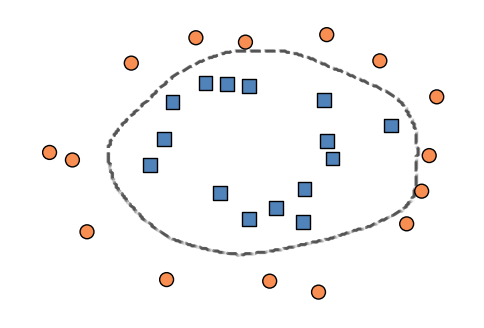

import torch import torch
from sklearn.datasets import make_moons, make_circles
from matplotlib import pyplot as plt
import numpy as np
plt.style.use('seaborn-v0_8-whitegrid')
# X_train, y_train = make_moons(50, shuffle = True, noise = 0.2)
# X_train = torch.tensor(X_train, dtype = torch.float)
# y_train = torch.tensor(y_train)
X_train, y_train = make_circles(30, shuffle = True, noise = 0.1, factor = 0.5)
X_train = torch.tensor(X_train, dtype = torch.float)
y_train = torch.tensor(y_train)
X_val, y_val = make_circles(30, shuffle = True, noise = 0.1, factor = 0.5)
X_val = torch.tensor(X_val, dtype = torch.float)
y_val = torch.tensor(y_val)
# X_val, y_val = make_moons(50, shuffle = True, noise = 0.2)
# X_val = torch.tensor(X_val, dtype = torch.float)
# y_val = torch.tensor(y_val)def plot_classification_data(X, y, ax, clf = None, thresh = 0, data = "Training"):
assert X.shape[1] == 2, "This function only works for data created with p_dims == 2"
if clf is not None:
h = 0.01
x_min, x_max = X[:, 0].min() - 0.2, X[:, 0].max() + 0.2
y_min, y_max = X[:, 1].min() - 0.2, X[:, 1].max() + 0.2
xx, yy = torch.meshgrid(torch.arange(x_min, x_max, h), torch.arange(y_min, y_max, h), indexing="ij")
XX = torch.stack([xx.ravel(), yy.ravel()], dim = 1)
Z = clf.score(XX)
Z = Z[:,1].reshape(xx.shape)
v = Z.abs().max()
ax.contourf(xx, yy, Z.detach(), cmap = "BrBG", alpha = 0.0, vmin = -v, vmax = v)
ax.contour(xx, yy, Z.detach() > thresh, zorder = -10, linewidths = 2, linestyles = "dashed", color = "grey", alpha = 0.5)
preds = clf.score(X)[:,1] > 0
# ax.set(title = f"{data} Accuracy: {torch.mean((preds == y).float()).item():.2f}")
targets = [0, 1]
markers = ["o" , ","]
for i in range(2):
ix = y == targets[i]
ax.scatter(X[ix,0], X[ix,1], s = 100, c = y[ix], facecolors = "none", edgecolors = "black", cmap = "RdYlBu", vmin = -0.4, vmax = 1.2, alpha = 1, marker = markers[i])
ax.set(xlabel = r"$x_1$", ylabel = r"$x_2$")def train_model(model, num_steps, **kwargs):
# define the loss function L for the linear model
loss_fn = nn.CrossEntropyLoss()
# instantiate an optimizer -- gradient descent today
opt = torch.optim.SGD(model.parameters(), **kwargs)
# collect the values of the loss in each step
loss_train_vec = []
loss_val_vec = []
for i in range(num_steps):
s = model.score(X_train) # compute the scores
loss = loss_fn(s, y_train) # compute the model loss
loss.backward() # auto-compute gradient
opt.step() # optimizer updates params
opt.zero_grad() # zero out the gradient
# for tracking model progress on the training set
loss_train_vec.append(loss.item())
# and on the validation set
s_val = model.score(X_val)
loss_val = loss_fn(s_val, y_val)
loss_val_vec.append(loss_val.item())
return loss_train_vec, loss_val_vecfrom torch import nn
class SingleHiddenLayer(nn.Module):
def __init__(self, num_features, num_labels, num_hidden):
"""
sets up the model infrastructure
"""
super().__init__()
self.pipeline = nn.Sequential(
nn.Linear(num_features, num_hidden),
nn.ReLU(),
nn.Linear(num_hidden, num_labels)
)
def score(self, x):
"""
computes scores for each class
"""
return self.pipeline(x)
def predict(self, x):
return self.score(x) > 0LM = SingleHiddenLayer(2, 2, 100)
loss_train, loss_val = train_model(LM, 1000, lr = 0.1) fig, ax = plt.subplots(1, 1, figsize = (6, 4))
plot_classification_data(X_val, y_val, ax, clf = LM)
ax.axis("off")
plt.savefig("sticker-submission.png", bbox_inches = "tight", dpi = 300)/var/folders/xn/wvbwvw0d6dx46h9_2bkrknnw0000gn/T/ipykernel_4368/3064003796.py:16: UserWarning: The following kwargs were not used by contour: 'color'
ax.contour(xx, yy, Z.detach() > thresh, zorder = -10, linewidths = 2, linestyles = "dashed", color = "grey", alpha = 0.5)
© Phil Chodrow, 2024